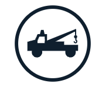

Trash and recycling
Pickup is on a normal schedule.
Street Cleaning
Street cleaning is on a normal schedule.
Parking meters
Parking meters are running on their normal schedules today.
Tow lot
The tow lot is only open Monday through Friday, from 7 a.m. - 10:30 p.m. Automated kiosks are availiable 24 hours a day, seven days a week for vehicle releases